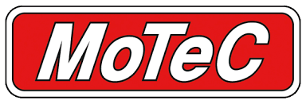

May 2025 – July 2025
HMI DISPLAY DESIGN USING MOTEC C1812 DISPLAY DEVICE
Vehicle Dynamics Controls & HMI Design Team
Greenville, SC (USA)
Human Machine Interface (HMI) Design
Delivered driver-focused HMI solution on MoTeC C1812 display by integrating CAN-based real-time vehicle diagnostics data visualization & alerts and enabling seamless steering-wheel button navigation.
- Integrated real-time vehicle data via a robust CAN communication architecture.
- Designed an intuitive GUI to visualize performance and diagnostic parameters.
- Enabled seamless multi-page navigation through steering wheel-mounted buttons.
- Enhanced driver interaction and situational awareness during regression testing.
